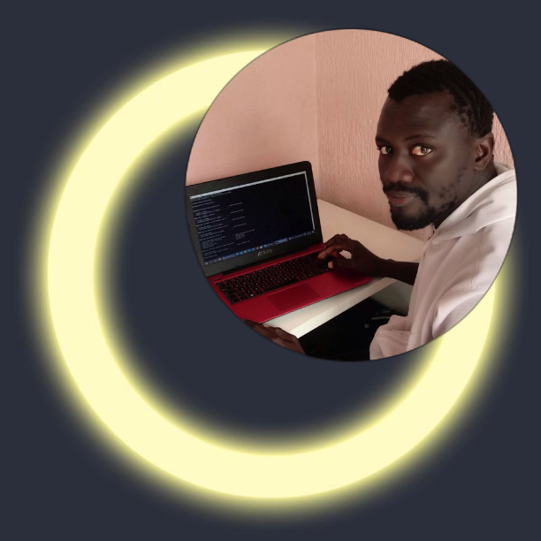

- 
- APRESENTACAO
-
ADAMA DIENG
front end
Graduado em Infomaticamas meu foco atual é no front-end.
Já trabalhei empresa como estagiário, nas quais
atuei com PHP, Javascript, MySql, HTML/CSS.
Meu estágio e minhas experiências por conta própria,
tenho 3 Mes e meio de experiência com desenvolvimento
web. Gosto de estudar novas tecnologias. Atualmente estou
estudando HTML CSS mais a fundo.